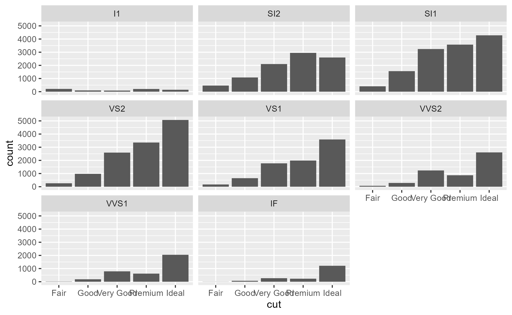
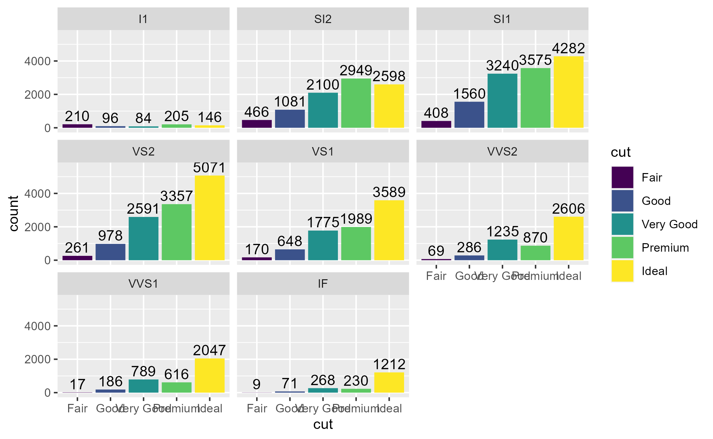

Inspect how many times a method was called
Arguments
- x
A ggplot object
- method
A function or a ggproto method. The ggproto method may be specified using any of the following forms:
ggproto$methodnamespace::ggproto$methodnamespace:::ggproto$method
Examples
library(ggplot2)
p1 <- ggplot(diamonds, aes(cut)) +
geom_bar(aes(fill = cut)) +
facet_wrap(~ clarity)
p1

# 1 call to Stat$compute_layer
ggtrace_inspect_n(p1, Stat$compute_layer)
#> [1] 1
# 8 calls to Stat$compute_panel
ggtrace_inspect_n(p1, Stat$compute_panel)
#> [1] 8
# Note that there are 0 calls to Stat$compute_group ...
ggtrace_inspect_n(p1, Stat$compute_group)
#> [1] 0
# because StatCount has its own "compute_group" method defined
ggtrace_inspect_n(p1, StatCount$compute_group)
#> [1] 40
# How about if we add a second layer that uses StatCount?
p2 <- p1 + geom_text(
aes(label = after_stat(count)),
stat = StatCount, position = position_nudge(y = 500)
)
p2

# Now there are double the calls to Stat/StatCount methods
ggtrace_inspect_n(p2, Stat$compute_layer)
#> [1] 2
ggtrace_inspect_n(p2, Stat$compute_panel)
#> [1] 16
ggtrace_inspect_n(p2, StatCount$compute_group)
#> [1] 80
# But separate calls to each layer's respective Geoms
# (note that Bar and Text are vectorized at the panel level)
ggtrace_inspect_n(p2, GeomBar$draw_panel)
#> [1] 8
ggtrace_inspect_n(p2, GeomText$draw_panel)
#> [1] 8